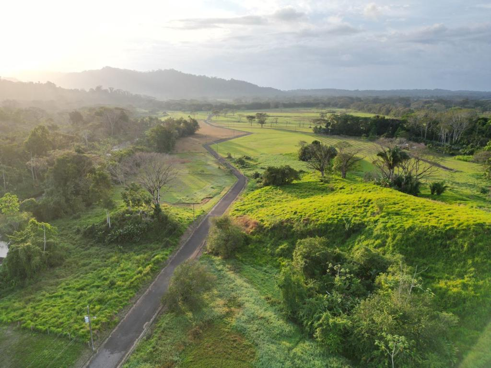

Two hundred and twelve parcels in the hills above the Pacific, and no developer to ask. For every lot: what the National Registry has on record, what similar lots have actually sold for, and a way to talk to the people who live here.
Status comes from the Registro Nacional on the date shown with each lot. Price ranges come from five comparable closed sales, declared prices, land only. Nothing here is a legal opinion — it is a place to start.
Five years on lot 47, in a house we built ourselves. Solar on the roof, a garden that feeds us part of the year, children at the school down the road, work over Starlink. The quiet, the birds and the paved roads are what keep us here. The stories about problem lots are what made us build this map.
We are not agents and we are not the HOA. Everything on this site comes from public registry records and real deeds, with the date it was read and the method used. Where we earn something, we say so.
Start where it is useful and stop where it stops being useful. Nothing on this page is sold. Every step is a request we answer personally, and payment is agreed then.
Registry status, price range, area, relief and cover for every lot. No sign-up.
Leave your email through the form and we send the five closed sales behind the range for your lot — without lot numbers — and how we got there.
What you are looking for, what this place is and is not, whether it is worth your time to come. The $50 counts toward any later step.
We walk the lots with you, show the roads, the water, our house. A full day ends with a meal from the garden. A night in the guesthouse on request.
Before you make an offer: every transfer in the lot's history, mortgages and notes explained, the state of the owning company, copies of the last deeds, a search of auction notices, and a plain list of what the report does not cover. A registry check, not legal advice.
A Costa Rican lawyer handles the purchase and the escrow. We stay around: directions, builders, water, the first hundred questions, and the neighbours.
Prices are guides. We agree the exact amount and the way to pay — transfer, SINPE, cash — once we have talked.
You may be far away and wondering what your parcel is worth, or ready to pass it on to the right neighbour. The same map works for you.
Click your lot. The range comes from five comparable closed sales, brought to today's level and to a standard 5,000 m² lot. Ask for the five sales by email, free. If the number looks wrong to you, tell us — the form is on the method page.
Listings carry a role label — our lot, we represent the seller, or platform only — and a registry verification dated the day we checked. Priced within the comparable range, a listing is free; above it, there is a fee. Send a request and we talk.
The same report buyers order, for your own lot: history, mortgages and notes, the owning company's status, copies of deeds. Useful before you sell, inherit or build.